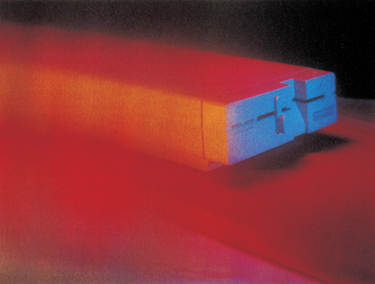
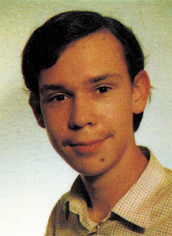

Vollgas für die Floppy 1570/71
Mit dem »FSD-System« können alle Besitzer eines 1570- oder 1571-Laufwerks jetzt aufatmen. Endlich wird die Diskettenstation auch am C 64 oder C 128 im C 64-Modus so schnell wie man es vom C 128 schon kennt. Zusätzlich bekommen Sie noch eine Vielzahl neuer Funktionen in Ihr Betriebssystem, wie zum Beispiel eine Centronics-Schnittstelle, die Ihnen die Arbeiten erleichtern.

Das »FSD-System« ist ein neues Betriebssystem für den C 64 oder den C 128 (für den C 64-Modus). Eshandeltsichhierbeiin der Hauptsache um einen Beschleuniger für das Diskettenlaufwerk 1570 und 1571, wobei lediglich zwei Drähte zusätzlich im Computer angelötet werden müssen.
Außer der Beschleunigung sämtlicher Diskettenfunktionen (die 1570/71 arbeitet im schnellen Burst-Modus), enthält das »FSD-System« noch eine Centronics-Schnittstelle am User-Port. Weiterhin existiert eine Eingabeunterstützung für Befehle an das Diskettenlaufwerk und natürlich die Anzeige eines Directory ohne Programmverlust.
Doch mit diesen Zusätzen nicht genug. Das »FSD-System« erlaubt das LISTen von Programmen oder Textfiles direkt von der Diskette, das MERGEn von Programmteilen und das Zurückholen von Programmen nach NEW oder einem Reset.
Das Laden von Programmen von der Diskette geschieht jetzt mit der vollen Geschwindigkeit der. 1570/ 7Zlim C 128-Modus und wird damit 7- bis 9mal schneller. Diese Funktion ist bei Bedarf abschaltbar, so daß auch »schwierige« Programme geladen werden können.
Interessant am »FSD-System« ist sicher, daß es sowohl auf einem C 64 als auch auf einem C 128 einwandfrei läuft. Beim C 128 im C 64-Modus bleiben dabei sämtliche Tasten weiterhin aktiviert, also auch der Zahlenblock des C 128. Auf dem C 64 werden diese Zusatztasten durch das Drücken von <CTRL> zusammen mit einer anderen Taste ersetzt.
Sehr durchdacht ist auch die Belegung des Zahlenblocks auf dem C 128. Hier hat sich der Autor an die Computer der CBM 8000-Reihe gehalten. Diese enthalten außer den Zahlen im Zahlenblock auch noch sämtliche Grafikzeichen für Tabellen und sind durch die <SHIFT>-Taste erreichbar angeordnet. Unter die Taste <+> wurde ein <*> gelegt, und die Taste <-> enthält über <SHIFT> ein . Ein gelungenes System also, das den Wettbewerbspreis von 2000 Mark voll verdient.
(D. Temme/ks)Lebenslauf

Am 9. Dezember 1966 wurde ich im schönen Aachen geboren, wo ich bis heute lebe. Nach dem gerade bestandenen Abitur mit den Leistungskursen Mathematik und Physik hat mich nun der Bund zum 1. Juli 1986 zum Wehrdienst einberufen.
Meine Vorliebe für das Programmieren am Computer begann schon 1980 mit dem CBM 3032 meines Vaters. Jahre später, im Oktober 1983, erwarb ich kurz vor einem hohen Preisanstieg den C 64, mit dem ich fortan glückliche Stunden verlebte, indem ich mich in Maschinensprache mühsam abquälte, nachdem schon der 200ler einen Maschinensprache-Monitor besaß und der »Neue und Bessere« nicht. Im Oktober 1985 kaufte ich mir einen Commodore 128 im Vollausbau (Floppy 1571 und Monitor 190]) in der Hoffnung, daß viele gute Programme auf den Markt kommen würden. Nach einigen kleineren SpielereienimC 128 und CP/M-Modus schrieb ich das »FSD-System 64«, um dem C 64-Modus auf Kosten der »absoluten Kompatibilität« mehr Attraktivität zu verschaffen (falls aufgrund der vielen brillanten Programme überhaupt noch möglich).
Die nächsten Programme aus meinen wunden Fingern werden wahrscheinlich »reinrassige« C 128-Programme sein, die den vorhandenen, riesenhaften, ungenutzten Speicher auch wirklich ausnutzen. Bisher stehen die Bits in der zweiten Speicherbank doch meistens in Warteposition. Dieter Temme